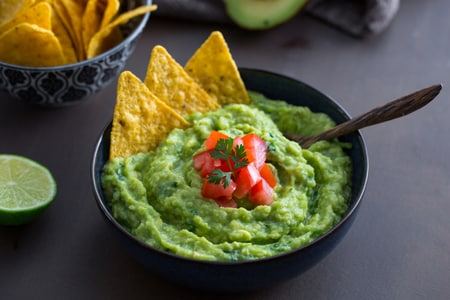
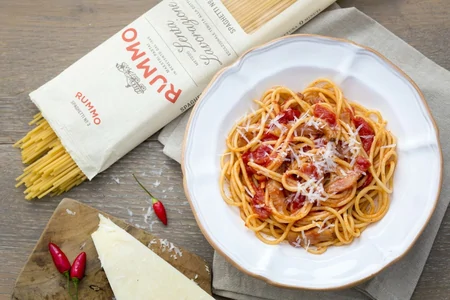
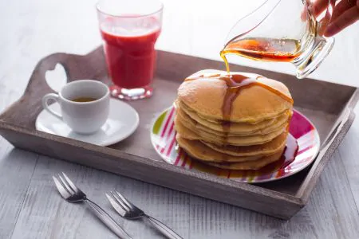
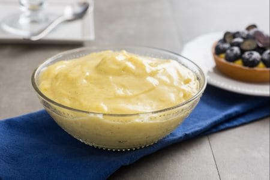

Guacamole
Ingredienti:
- Avocado (2) 500 g
- Succo di lime 35 g
- Pomodori ramati 1
- Cipolle bianche (mezza) 35 g
- Coriandolo q.b.
- Sale fino 1 pizzico
Preparazione:
Per preparare il guacamole, per prima cosa mondate e tritate finemente la cipolla, poi tritate anche il coriandolo Dividete l’avocado a metà ed estraete il nocciolo Prelevate la polpa con l’aiuto di un cucchiaio e versatela all’interno di un mortaio . Aggiungete il succo di lime e cominciate a pestare fino ad ottenere una crema Unite anche la cipolla tritata e il coriandolo e pestate ancora per amalgamare il tutto, poi aggiustate di sale. Se vi piace il piccante, a questo punto potete aggiungere del peperoncino fresco o qualche goccia di tabasco. In ultimo riducete il pomodoro a dadini e aggiungetelo sulla salsa. La vostra salsa guacamole è pronta per essere servita!
Spaghetti all'amatriciana
Ingredienti:
- Spaghetti 320 g
- Guanciale di Amatrice 150 g
- Sale fino q.b.
- Peperoncino fresco 1
- Pomodori pelati 400 g
- Pecorino romano da grattugiare 75 g
- Olio extravergine d'oliva q.b.
- Vino bianco 50 g
Preparazione:
Per preparare gli spaghetti all’amatriciana, per prima cosa mettete a bollire l'acqua per la cottura della pasta da salare poi a bollore. Potete quindi dedicarvi al condimento: prendete il guanciale, eliminate la cotenna 1 e tagliatelo a fette di circa 1 cm di spessore; riducete le fette a listarelle di circa mezzo cm 3. A questo punto scaldate un filo di olio in una padella, possibilmente d’acciaio, e aggiungete il peperoncino intero e il guanciale tagliato a listarelle; fatelo rosolare a fiamma bassa per 7-8 minuti fino a che il grasso non sarà diventato trasparente e la carne croccante; mescolate spesso facendo attenzione a non bruciarlo. Quando il grasso si sarà sciolto, sfumate con il vino bianco 6, alzate la fiamma e lasciate evaporare. Trasferite le listarelle di guanciale in un piatto 7 e tenetele da parte, versate nella stessa padella i pomodori pelati: sfilacciateli con le mani direttamente all’interno del fondo di cottura 8, proseguite la cottura del sugo per circa 10 minuti. A questo punto l’acqua nel tegame sarà arrivata a bollore, quindi versate gli spaghetti e cuoceteli al dente. Nel frattempo regolate di sale 10, eliminate il peperoncino dal sugo 11, unite le listarelle di guanciale in padella 12 e mescolate per amalgamare. Una volta cotti gli spaghetti, scolateli e uniteli direttamente nella padella con il sugo 13. Saltate molto velocemente la pasta per amalgamarla bene al condimento, se gradite la pasta al dente potete spegnere il fuoco altrimenti versate poca acqua della pasta per proseguire la cottura. Per finire spolverizzate con il Pecorino grattugiato 14: i vostri spaghetti all’Amatriciana sono pronti per essere serviti 15!
Parmigiana di melanzane

Ingredienti:
- Melanzane ovali nere 1,7 kg
- Fiordilatte 500 g
- Cipolle dorate 1
- Olio extravergine d'oliva q.b.
- Sale fino q.b.
- Parmigiano Reggiano DOP (da grattugiare) 150 g
- Basilico q.b.
- Pepe nero q.b.
Preparazione:
Per preparare la parmigiana di melanzane cominciate dal sugo. Pulite e tritate la cipolla 1, versatela in un tegame dove avrete scaldato l'olio (che copra il fondo). 2. Lasciatela rosolare per un paio di minuti mescolando spesso per non farla bruciare, poi unite la passata di pomodoro 3. Regolate di sale e versate le foglie di basilico 5, sciacquate il recipiente con poca acqua e versatela in pentola quindi lasciate cuocere a fuoco dolce per 45-50 minuti 5. Nel frattempo tagliate a cubetti il fiordilatte tenendone da parte un pezzo che servirà alla fine 6. Mettete a scolare i cubetti in uno scolapasta messo in una ciotola 7, coprite con pellicola e mettete da parte: questo procedimento serve a far colare il siero in eccesso 8. A questo punto passate alle melanzane, pulitele e spuntatele 9. Affettate per il senso della lunghezza ottenendo delle fette spesse di 4-5 mm 10. Quando avrete finito friggete le melanzane in olio già caldo 170° immergendo pochi pezzi alla volta 11, non appena saranno leggermente dorate scolate su vassoio con carta assorbente 12. uando sul vassoio sarà finito lo spazio mettete altra carta assorbente 13 e mettete a scolare le altre melanzane fritte 14. In ultimo passate alla composizione, iniziate versando un po’ di sugo in una pirofila da 20x30 cm 15. Formate il primo strato disponendo le fette di melanzane 16, versate il sugo di pomodoro 17, spalmatelo e distribuite dei cubetti di fiordilatte 18. Spolverizzate con il Parmigiano grattugiato 19 e delle foglie di basilico 20. Ricominciate aggiungendo il sugo di pomodoro 21 e le melanzane, che andranno adagiate in senso contrario. E poi ancora i formaggi 22 e le foglie di basilico. Andate avanti così fino ad arrivare all'ultimo strato di melanzane 23 e che andrete a condire, ancora una volta, con sugo e il fiordilatte che avete tenuto da parte, da spezzettare a mano 24. Finite con il Parmigiano grattugiato 25 e infornate in forno statico, già caldo a 200°, per circa 30 minuti 26. Trascorso il tempo di cottura lasciate riposare per 15-20 minuti prima di servire la vostra parmigiana di melanzane 27.
Pancake allo sciropppo d'acero
Ingredienti:
- Burro 25 g
- Uova medie 2
- Lievito in polvere per dolci 6 g
- Farina 00 125 g
- Latte intero fresco 200 g
- Zucchero 15 g
- Sciroppo di acero q.b.
Preparazione:
Iniziamo la preparazione dei pancake fondendo il burro a fuoco bassissimo, quindi lasciate intiepidire. Intanto dividete gli albumi dai tuorli. Versate i tuorli in una ciotola e sbatteteli con una frusta a mano 1, poi unite il burro fuso a temperatura ambiente 2 e il latte a filo, continuando sempre a mescolare con la frusta 3. Montate il composto finchè non risulterà chiaro. Unite il lievito alla farina 4 e setacciate tutto nella ciotola con il composto di uova 5, mescolate con la frusta per amalgamare 6. Ora montate gli albumi che avete tenuto da parte, versando poco alla volta lo zucchero 7 e quando saranno bianchi e spumosi incorporateli delicatamente al composto di uova, con movimenti dall'alto verso il basso, per evitare di smontarli 8. Mettete a scaldare sul fuoco medio (non alto altrimenti non darete il tempo all'impasto di lievitare bene durante la cottura e i pancake diventeranno troppo scuri) una padella ampia antiaderente (meglio se a fondo spesso) e, se necessario, ungete con poco burro da spandere sulla superficie con l'aiuto di carta da cucina. Versate al centro del pentolino un mestolino di preparato 9, non ci sarà bisogno di spanderlo. Quando inizieranno a comparire delle bollicine in superficie e la base sarà dorata, giratelo sull’altro lato per mezzo di una spatolina 10, come se fosse una crepe o una frittata, quindi fate dorare a sua volta anche l'altro lato, dopodichè il pancake sarà pronto 11. Proseguite così con il resto dell'impasto e man a mano disponete i pancake su un piatto da portata, impilateli uno sopra l'altro. Con queste dosi dovrebbero formarsi all'incirca 12 pancake. Serviteli caldi e cosparsi di sciroppo d’acero 12. Potete accompagnare i pancake con della frutta fresca o sciroppata di vostro gusto.
Crema pasticcera
Ingredienti:
- Latte intero 500 g
- Tuorli (circa 7) 125 g
- Baccello di vaniglia 2
- Zucchero 130 g
- Amido di riso 40 g
- Scorza di limone ½
Preparazione:
Per preparare la crema pasticcera come prima cosa inserite in freezer una ciotola di vetro. A questo punto ricavate i semi dalla vaniglia e tagliate i baccelli in pezzi. Versate il latte in un tegame e aggiungete sia i semi che i baccelli della vaniglia. Ricavate dal limone la scorza, prelevando solo la parte gialla, e unitela nel tegame. Accendete il fuoco e scaldate il tutto portando a bollore e mescolando di tanto in tanto. In un altro tegame versate i tuorli, lo zucchero e l'amido di riso. Utilizzando un frustino morbido mescolate per ottenere una consistenza cremosa e liscia. Non appena il latte sfiorerà il bollore, trasferitelo all'interno dei tuorli in 3 volte filtrandolo con un colino e mescolando sempre con la frusta. Trasferite di nuovo sul fuoco e mescolate in continuazione fino a che non si sarà addensata. Per raffreddarla velocemente riprendete la ciotola dal freezer e versate la crema all'interno. Mescolate con una frusta molto velocemente, fino a che non avrete portato la crema a 50°, al di sotto del punto di cottura. Dovrete ottenere una crema liscia e molto lucida. A questo punto la crema pasticcera è pronta, potrete utilizzarla o conservarla in frigorifero coprendola con pellicola.